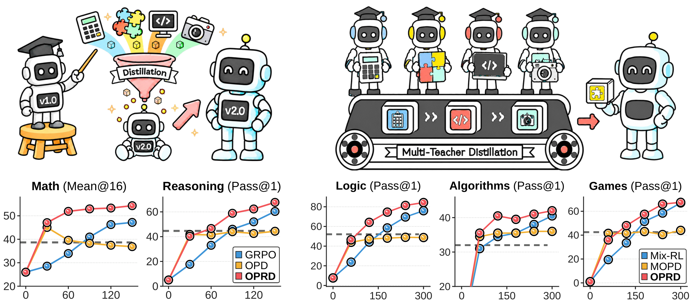
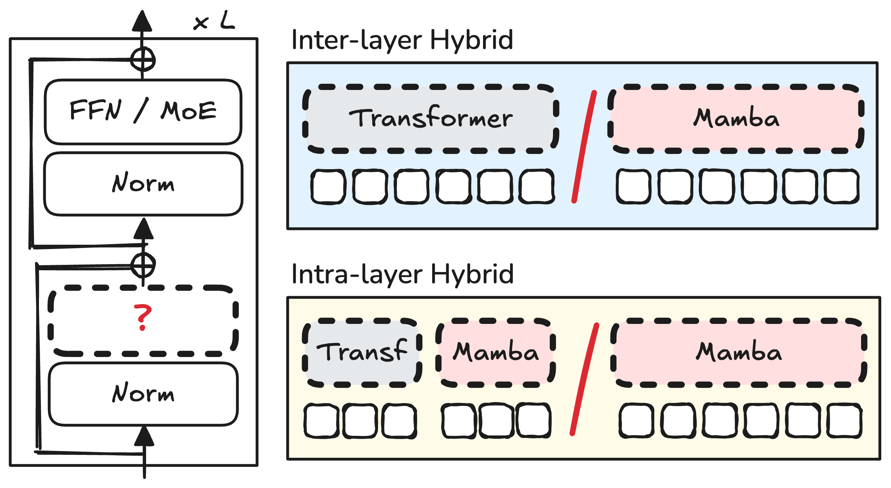
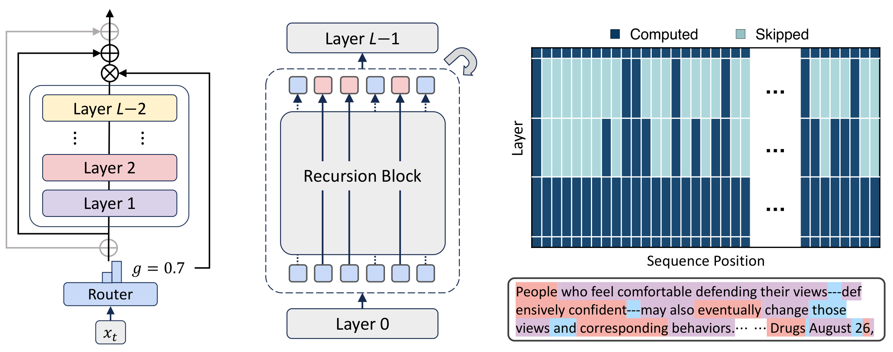

2021 — 2025
Ph.D. in Artificial Intelligence
KAIST
Advisor: Se-Young Yun
DissertationPostdoctoral Researcher · KAIST AI
I study efficient machine learning through adaptive computation, efficient architectures, efficient post-training, and agentic systems.
I received my Ph.D. from KAIST, advised by Se-Young Yun. Previously, I was a research intern at Google DeepMind and Meta FAIR.
Four papers at NeurIPS 2026, including BASTION, LLM-as-a-Tutor, DualDrift, and Temporal Alignment Guidance.
New preprint: On-Policy Reverse Distillation for weak-to-strong generalization.
TAC-CoT, our work on tool-empowered implicit reasoning, at EMNLP 2026.
2021 — 2025
KAIST
Advisor: Se-Young Yun
Dissertation2019 — 2021
KAIST
Advisor: Se-Young Yun
2014 — 2019
KAIST
Early exiting, recursive Transformers, and speculative decoding.
Hybrid models, linear attention, and scalable foundation models.
On-policy distillation and learning beyond a teacher’s limits.
Model routing, orchestration, and self-evolving memory systems.

Enlarge figureUsing a weaker teacher’s guidance to accelerate a stronger student’s own learning.

Enlarge figureSystematic analysis and design insights for combining Transformers and state-space models.

Enlarge figureShared parameters and learned routing let each token use the depth it needs.
SEP 2025 — PRESENT
Postdoctoral Researcher
Working with Se-Young Yun. InnoCORE-LLM Fellow, studying distillation, adaptive computation, and efficient agentic workflows.
MAY — AUG 2024
Research Intern
Recursive architectures for adaptive computation. Advised by Tal Schuster and Adam Fisch.
MAY — SEP 2025
Research Intern
Scalable, efficient hybrid language model architectures. Advised by Carole-Jean Wu and Bilge Acun.
SEP 2018 — FEB 2019
Research Intern · Recommendation Team
Deep learning and contextual multi-armed bandits for article recommendation. Advised by Kwangseob Kim.
JUL — AUG 2018
Research Intern
Multi-armed bandit algorithms, with Se-Young Yun.
DEC 2017 — JUN 2018
Research Intern
Machine learning for cross-country skiing technique classification, with Shuping Xiong.
Strategic sub-agents, memory systems, and hybrid architectures for agent workflows.
Large language model compression and inference acceleration through speculative decoding.
Efficient scaling laws for reasoning in large language models. Project Manager.
Inference-efficient algorithms and neural scaling laws. Supported by IITP; Project Manager.
CVPR 2024, 2026 · ACL 2024, 2026 · EMNLP 2026 · AAAI 2025, 2026 · ICLR 2025, 2026 · ICML 2026 · NeurIPS 2026 · TMLR.
Instructor
Leadership
2025
Postdoctoral Fellowship
2025
$30,000 · Efficient scaling laws for reasoning
2025
$3,000
2024
Silver Prize · Signal Processing
2024
$30,000
2022
Korea Computing Congress
2021
Korean Artificial Intelligence Association
2019
Highly Compute Efficient Distinction · CIFAR-100
2017–2019
2017
KAIST College of Engineering
US application 19/347,594 · October 2025
Adam Fisch, Tal Schuster, Hrayr Harutyunyan, Ziwei Ji, Seungyeon Kim, Sangmin Bae.
KR granted 10-2957234-0000 · April 2026
US application 18/472,393 · September 2023
Se-Young Yun, Seongyoon Kim, Woojin Chung, Sangmin Bae.
KR granted 10-2646338-0000 · March 2024
US application 17/975,664 · October 2022
Jaehoon Oh, Sangmook Kim, Se-Young Yun, Sangmin Bae, Jaewoo Shin, Seongyoon Kim, Woojin Chung.
KR granted 10-2934412-0000 · February 2026
US granted 12,632,784 · May 2026
Gihun Lee, Minchan Jeong, Se-Young Yun, Sangmin Bae, Jaeyeon Ahn, Seongyoon Kim, Woojin Chung.
Try another keyword or clear your filters.